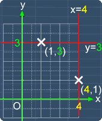
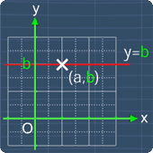
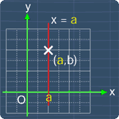

Equation of a Line Parallel to The x-Axis or y-Axis
Lesson Objective
This lesson shows you how to determine the
equation of a line that is parallel to the
x-axis or y-axis.
About This Lesson
In this lesson, we will learn how to determine
the equation of a line that is parallel to the
axis or y-axis.
This lesson shows you the key ideas behind a line that is parallel to the x-axis or y-axis of the coordinate plane. Also, we will see some examples on determining its equation.
You can proceed by reading the study tips first or watch the math video or try out the practice questions.
This lesson shows you the key ideas behind a line that is parallel to the x-axis or y-axis of the coordinate plane. Also, we will see some examples on determining its equation.
You can proceed by reading the study tips first or watch the math video or try out the practice questions.

Tip #1
For a line that is parallel to the x-axis, the
equation for such a line is:
y = b where b is some constant
Now, notice that b is the value of the
y-coordinate of any point on the line. For example, if b = -2, the equation of the line parallel to the x-axis will be:
y = -2
The math video below will show you the reasons behind this.
y = b where b is some constant
Now, notice that b is the value of the
y-coordinate of any point on the line. For example, if b = -2, the equation of the line parallel to the x-axis will be:
y = -2
The math video below will show you the reasons behind this.

Tip #2
Similarly, for a line that is parallel to the
y-axis, the equation for such a line is:
x = a where a is some constant
Also, notice that a is the value of the
x-coordinate of any point on the line. For example, if a = 1, the equation of the line parallel to the x-axis will be:
x = 1
The math video below will show you the reasons behind this.
y-axis, the equation for such a line is:
x = a where a is some constant
Also, notice that a is the value of the
x-coordinate of any point on the line. For example, if a = 1, the equation of the line parallel to the x-axis will be:
x = 1
The math video below will show you the reasons behind this.

Tip #3
Usually, the equation of a line parallel to the
x-axis is written this way:
y = 1
For some cases, you may come across the equation above written in this form instead:
y -1 = 0
Now, these two equations are in fact the same, this is because if we add +1 to both sides of the equation, we have:
y -1 +1 = 1
y = 1
So, we can see that there is no difference between these two equations. This explanation also applies for the equation of a line parallel to the y-axis.
y = 1
For some cases, you may come across the equation above written in this form instead:
y -1 = 0
Now, these two equations are in fact the same, this is because if we add +1 to both sides of the equation, we have:
y -1 +1 = 1
y = 1
So, we can see that there is no difference between these two equations. This explanation also applies for the equation of a line parallel to the y-axis.
Math Video Transcript
Multiple Choice Questions (MCQ)
Now, let's try some MCQ questions to understand
this lesson better.
You can start by going through the series of questions equation of a line parallel parallel to the x-axis or y-axis or pick your choice of question below.
You can start by going through the series of questions equation of a line parallel parallel to the x-axis or y-axis or pick your choice of question below.
- Question 1 on determining the equation of a line using the coordinates of two points.